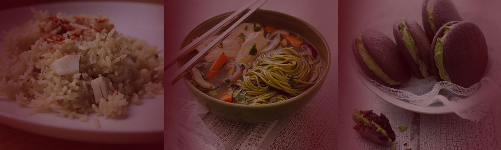

Users’ Innovations
People are of different interests and backgrounds but one thing that most can agree upon is food and the philosophy that you can make anything out of any combination of ingredients you want. Tea lovers noticed that tea leaves seem like spice bags of specific proportions. With that in mind they started to experiment with different types of foods and soon enough, tea became a part of an all five course meal. This includes salads, soups, appetizers, main courses, and desserts. The uses of the tea varies depending on the dish and its purpose.

Industries’ Innovations
Tea industries try to innovate as much as the tea users. In their own way, they try to play with the packaging of their tea leaves. The innovations vary depending on the function and intention of the tea bag design. Designs that maximize the amount of tea leaves added and minimize the amount of packaging material are usually circular or triangular. Other packaging designs aim to maximize the strength of the tea. These designs are flexible in terms of shapes though they have no tags. This functions well for the bags remain at the bottom of the pot resulting in continuous concentration of the tea. Another design designed by the Tetley tea company is a circular tea bag with two tags. This functions as a tea bag that helps people squeeze out the concentrated water from the tea bag as they remove it from their come to avoid dripping tea.